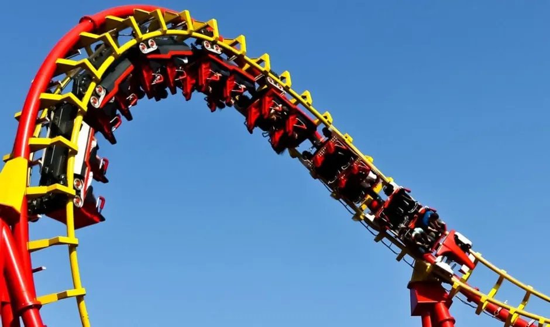
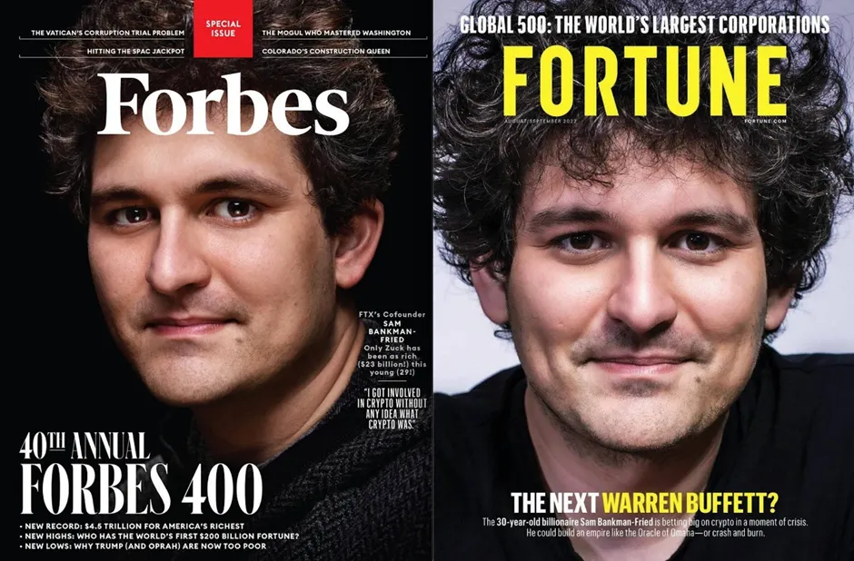
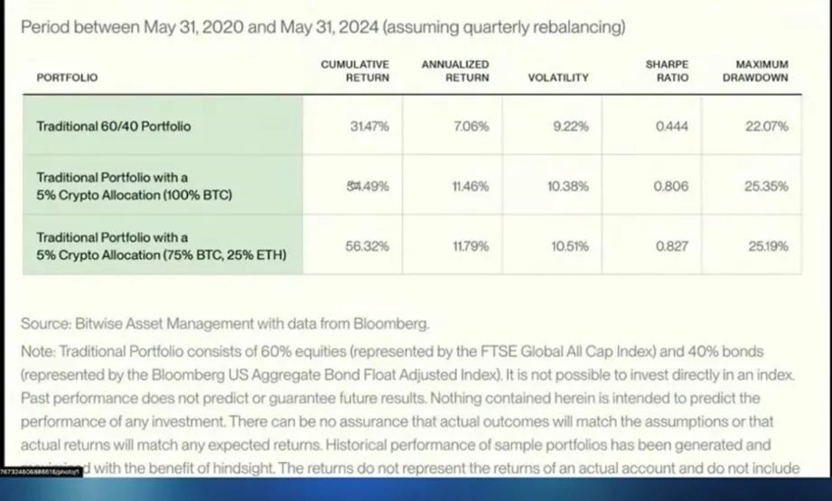
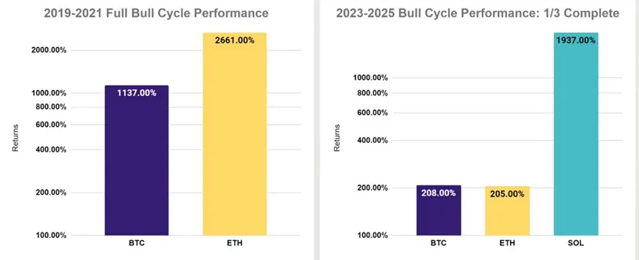
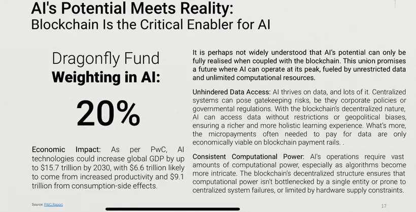
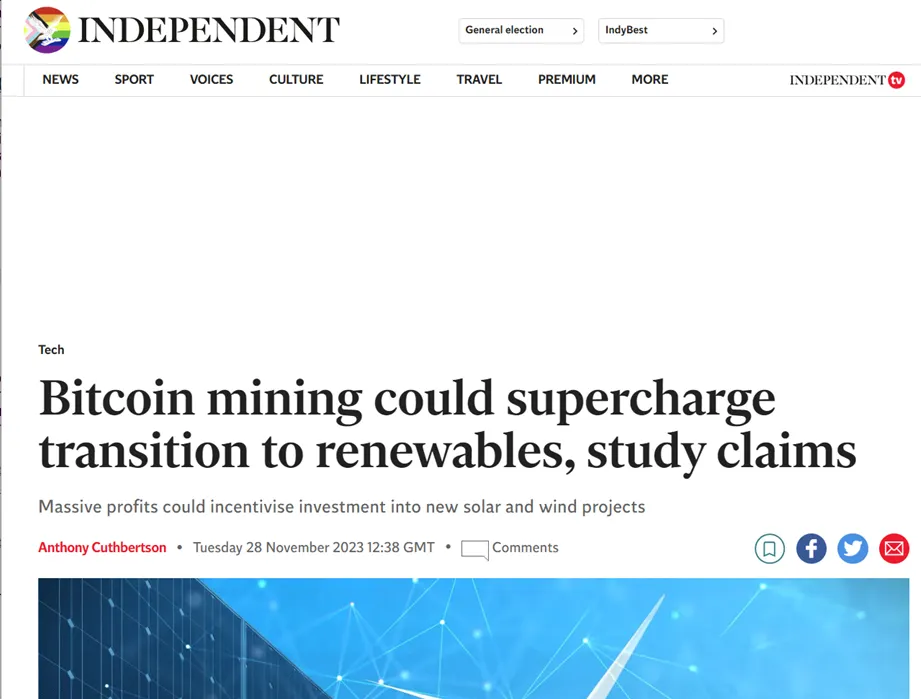
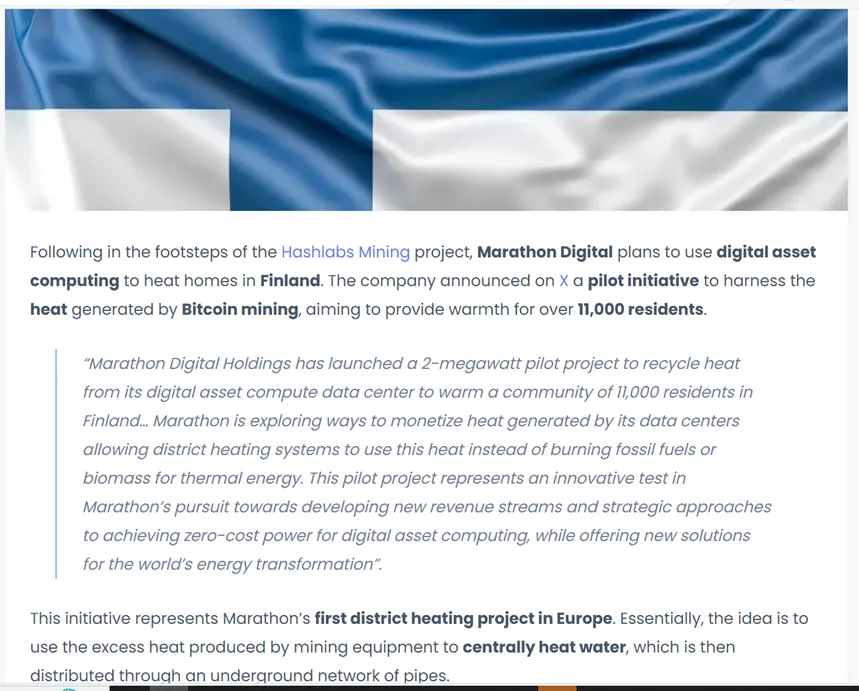
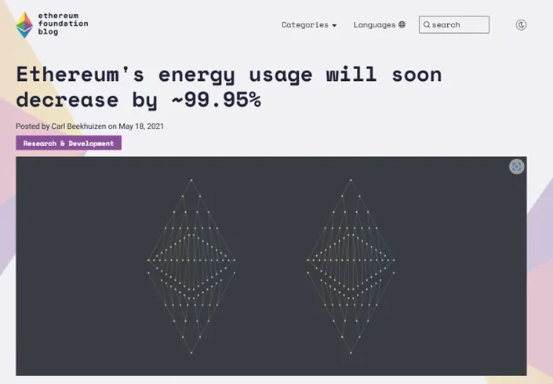

Since joining the Crypto industry, I have been struck by some pretty widely held misconceptions which form the rationale behind not investing in Crypto. As a seasoned professional investor with a long career in Tradfi, I launched a Crypto investment fund simply because I believe it's the most attractive asset class right now.
Today, I would like to explain why some of the reasons not to invest in Crypto that you hear (especially in mainstream media) aren't entirely accurate!
FTX was one of the most successful Crypto exchanges worth $32bn at its peak, being the third largest exchange by volume and having over one million users. Its collapse shocked the financial markets in November 2022 and wiped out its 31 one year old founder, Sam Bankman-Fried's ("SBF") $26bn fortune. It was as recently as in 2021 that Forbes described him as "the richest twentysomething in the world" and he regularly appeared on the front cover of illustrious business magazines.

I believe part of the reason FTX's collapse was so unexpected was that the exchange appeared extremely profitable and SBF was well-connected politically and came from a respected and affluent background (both parents were Stanford professors). We now know FTX was indeed a very profitable Crypto exchange business: even after the fees and turmoil of bankruptcy, all customers/stakeholders are getting their money back in full.
Despite his respectable image, SBF was in fact committing fraud: it transpired that SBF was stealing customer money from FTX to shore up his girlfriend's losses at hedge fund and connected organisation Alameda Research.
In this sense, the fraud was very little to do with Crypto and perhaps more to do with hubris of a young entrepreneur out of his depth. The lack of oversight by intermediaries, investors and the regulators — given SBF's "genius" and "respectable" reputation — played an important part in allowing the fraud to take place.
In my thirty-year investing career, I have seen a small number of frauds perpetrated even in fully regulated businesses (Bernie Madoff is perhaps the most stunning example). In every other case that I remember, the people unfortunate enough to be involved lost all their money. Therefore despite the shock and focus on this fraud which is huge in terms of the relatively small size of the Crypto industry, no one even lost money! The enabling factors were common to all the other large scale frauds we have seen in investing: having a reputation as a "genius" often means intermediaries undertake less onerous checks. SBF is nevertheless serving a 25-year jail sentence for conducting this fraud.
What is important to note is that FTX's collapse had a silver lining for Crypto: not only did other Crypto exchanges rapidly "self-regulate" by adopting proof of reserves declarations, but the embarrassment this fraud brought on US regulators — who had hitherto dragged their heels on providing clear regulations for the industry — actually served to accelerate regulation of the sector worldwide (a very welcome development for investors).
In common with every other asset class I've seen in its infancy, Crypto is indeed very volatile, typically experiencing one dramatic down year in each four-year cycle, with an average annual fall of around 70%. But this volatility has to be set against the extraordinary returns on offer (returns of 1104% in the past five years and 170x on a ten-year timescale).
Crypto's returns have materially beaten every single other financial asset class by a wide margin over the past 15 years. What's more, given the lower correlation to established assets like equities and bonds, the addition of Crypto to a multi-asset portfolio massively improves its "Sharpe Ratio" — i.e. the return you're generating for the risk you're taking. A high Sharpe Ratio is the Holy Grail of portfolio construction — getting the maximum bang for your buck!
What attracted me to the sector is that it is in effect an "each way bet" asset: it serves both as a safe haven like gold (given Crypto effectively operates outside the traditional banking system and Bitcoin is very scarce in supply) but at the same time it's a technology growing at an exponential rate (users are growing faster than the early days of the internet in fact!).
The way professional investors often deal with volatile assets is to size the position according to the individual investor's risk tolerance rather than to exclude them. This is simply because even having a small exposure means your downside is pretty limited (eg if you allocate 1% of your money to Crypto, in a down year, this equates to just 70 basis points loss on the overall portfolio but over the long term, compounding Crypto's very high returns could still at that low allocation materially boost your overall portfolio return).
The report by Bitwise below highlights the impact of even a small allocation to Crypto (note this five-year period includes a brutal bear market in 2022): adding just 5% of the portfolio to Crypto over the past five years — even taking into account the brutal bear market in 2022 — would have almost doubled the 5-year return of a conservative portfolio — from 31% to 56% — with less than a 1% sacrifice in terms of increased volatility. In my opinion, this is the reason more and more funds will include a Crypto allocation as this asset class becomes more understood and regulated (and what's exciting is that we are starting from a position where virtually no funds have an allocation!).

This is perhaps the most frustrating misunderstanding I encounter. Blockchains are similar to "road and rails". They are static ledgers and lots of VC investment went into building them out. The problem is they are essentially fully built out now. In order to use and make fees on this very expensive and sophisticated blockchain infrastructure, you absolutely need Crypto (it cannot work any other way!). Crypto is analogous to "little racing cars" that move stuff around these networks, allowing you to do a growing list of things and also allowing you to pay the network to use it. The network gets paid fees in Crypto tokens for these movements so Crypto is absolutely integral to the whole approach.
As investors wanting to benefit from the growth of this new version of the internet, we can look at the experience of the earlier days of the internet: most of the money was made as apps were built on top of the internet's "rail and roads" — these apps encouraged users to adopt the technology and provided numerous real world use cases. Exactly the same thing is now happening in Crypto: my fund invests in a basket of leading Crypto protocols to benefit from their rapid growth. This growth in fees and network usage is reflected in the token price. Crypto Tokens are a notional ownership of the network so rise in value like shares do when a protocol gains traction.
Crypto is a very innovative early-stage technology sector. Bitcoin was the first innovation, and it is still a very attractive investment. The reality however is that newer innovations are constantly emerging which are a step forward and better suited to customer needs. For example, Ethereum emerged over five years ago, and innovated on the decentralised network idea of Bitcoin by adding "smart contracts": instead of just sending stuff between two parties, you could add "conditions" or contract obligations to this exchange. This was wildly popular as it allowed many more use cases and ultimately meant Ethereum's token rose much faster than Bitcoin in the last cycle. In this cycle, our biggest position Solana has innovated on Ethereum's idea by addressing the needs of its customers to have a far cheaper and faster blockchain.
As the chart below shows, Solana has massively outperformed both Bitcoin and Ethereum in this cycle so far as a direct result (NB amazingly, it now has more users and makes more fees than Ethereum). This is the reasoning behind taking a basket approach to the sector rather than just buying Bitcoin: at this early stage, the ultimate winners aren't clear so by taking a diversified investment approach, we hope to benefit from the extraordinary gains to be made as the winners of tomorrow emerge.

Another reason to prefer a diversified exposure to the sector rather than just investing in Bitcoin is that there are a number of very exciting niches within the Crypto sector, with AI perhaps being the most transformative. What few people understand is that Crypto is in fact the critical enabler of AI:

This is another argument I often hear against Crypto. But the reality couldn't be further from the truth (in fact, I believe Crypto as a technology has the power to transform virtually every industry):
A new technology's first 'killer application' often goes under the radar as it rarely seems very exciting or to have much potential (the truth is, people rarely see it's just the beginning!):
* Computers had word processing
* The internet had plain text on a screen
* And smart phones had mobile email access
* Crypto's first killer application was payments: open payment networks — which are reaching a point where they are cheaper, faster, and easier to access (globally) than traditional options. To illustrate, Shopify, PayPal and Stripe are all rapidly adopting Crypto rails (nb Shopify's 2.8m retail merchants can save up to 3% payment processing fees in the process)
Payments is just the start of the way Crypto and blockchains are transforming every industry: an exciting early-stage real world example is Teleport (the web3 ride sharing app), which by leveraging open Crypto networks, is able to undercut Uber by 60%.
How?: Teleport and Uber are essentially just pieces of software that match drivers with passengers.
Difference is…
Uber has to pay for private infrastructure, real estate, 32k+ employees and interest payments on its $9.5B in debt — all the while answering to shareholders that want to see month-on-month revenue growth.
Which is partly why Uber, takes up to 45% of each fare!
The other side of that spend goes towards paying into a vicious downward spiral of incentives and advertising.
Uber drivers feel like they're not being paid enough → so they leave at a higher rate → so Uber then spends on marketing to attract new drivers → offering them sign up bonuses → which come out of the pocket of existing drivers…
(Repeat).
But the Solana-based TRIP network is far more efficient: developers, like the people behind Teleport, can build a sleek app interface on the blockchain, and avoid the need to invest as heavily in infrastructure, real estate, and head count.
The main problem Teleport needs to solve is attracting riders/drivers, which they've been able to do in early testing, largely through word of mouth.
They're able to take a 15% cut of fares (as opposed to Uber's 45%) and pass the savings on to the riders/drivers. Which, after just one weekend of test operations in Austin, helped to double their overall driver count.
Will it scale?
No idea!
As seasoned investors, we've seen over and over again how material cost efficiency gains are the most powerful driver of new tech adoption. Now that these powerful Crypto networks have reached scale and have been thoroughly battle-tested, industry specific real world use cases are proliferating!

The Bitcoin network is secured by "Bitcoin mining" which is a mathematical process utilising huge amounts of computational power and therefore energy. However, the reality is that Bitcoin mining is mostly done using renewable energy and more importantly, states and countries with abundant cheap renewable energy are competing to attract Bitcoin mining companies because the pattern of their demand — which is very different from that of ordinary consumers — actually means more renewable projects become viable and therefore the availability of renewable energy within the mix of the electricity grid actually increases! One specific example of the benefits of Bitcoin mining is Marathon Digital's initiative to heat 11,000 homes in Finland by recycling the heat generated by mining:

The other important factor to note is that the vast majority of Crypto networks secure themselves not from energy-intensive mining but energy-efficient staking. The staking validation system utilises only a fraction of the energy of mining. Ethereum — the second largest Crypto network — actually switched from mining to staking and cut 99% of their energy use in the process:

I hope you now see what I see: many of the widely held views people give as the reasoning for not investing in Crypto perhaps largely stem from a lack of understanding about this early-stage sector. What's exciting to me as an investor is that Crypto is growing exponentially in users and use cases (and this is reflected in the fact that it is by far the best performing asset in its fifteen year history). It is now fast becoming a mainstream investment asset class as easy-to-access products and regulation arrive, while understanding is growing every day and few portfolio have yet to allocate to it…..